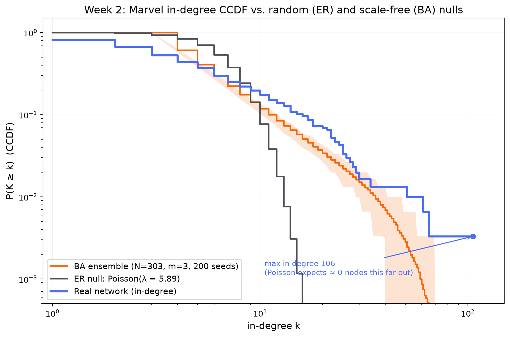
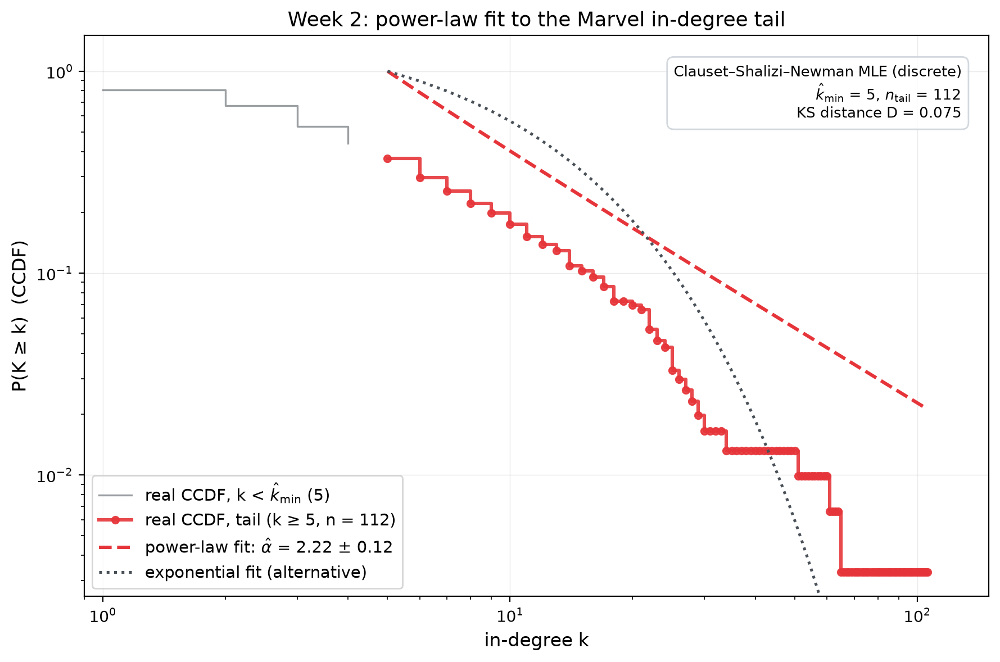

Random, scale-free, or neither?
We put the Marvel in-degree distribution on trial against Erdős–Rényi and Barabási–Albert — with a CCDF, a Clauset–Shalizi–Newman fit, and a frank list of what the data can't decide.
What we asked
Week 1 established that fame in the Marvel network is lopsided: the median character is cited 3 times, Spider-Man 106. But skewed isn't a model. This week's question is whether the degree distribution actually looks like one of the two canonical suspects — a random graph (Erdős–Rényi, where degrees pile up in a Poisson bell around the mean) or a scale-free network (Barabási–Albert, where degrees follow a power law and hubs dominate) — or neither.
What we did
We reused the frozen Week 1 snapshot — 303 characters, 1,784 directed links — and took in-degree as the measure of interest: how many other characters' articles link to yours. To compare shapes fairly we plotted the CCDF, P(K ≥ k): the fraction of characters with in-degree at least k. CCDFs don't need binning, so nothing about the tail gets hidden or smeared by bin-width choices.
Against the real curve we drew two nulls. The ER null is exact: a random graph
with the same 303 nodes and 1,784 edges has in-degree
~ Poisson(λ = 1,784/303 ≈ 5.89), so we plotted that CCDF
analytically. The BA null is simulated: 200 Barabási–Albert graphs with
N = 303 and m = 3 (mean degree 5.94, matching ours), averaged with a
5–95% band so the models' own wobble is visible instead of hidden. Then we fitted the real
tail with the Clauset–Shalizi–Newman discrete maximum-likelihood estimator
(the powerlaw package), which also picks the fit's lower cutoff
k̂min by itself, and ran Vuong likelihood-ratio tests of the power law against
exponential, lognormal, and truncated-power-law alternatives. The fit runs on the 245
characters with in-degree ≥ 1 — the 58 never-cited characters have k = 0 and
can't belong to any tail anchored at k ≥ 5.
- Mean in-degree ⟨k⟩5.89
- Max in-degree106 · Spider-Man
- ER expects at k ≥ 1063 × 10−89 characters
- Fitted exponent α̂2.22 ± 0.12
- Tail fitted (k ≥ 5)112 of 245
- BA's biggest hub, 200 seeds53 avg (36–77)


The case against random
Under the ER null, a character with in-degree 20 or more should essentially never exist: the expected count across all 303 characters is 0.0012. The real network has 21. At k ≥ 50 the real roster still has four characters (Spider-Man 106, Hulk 64, Wolverine 60, Doctor Strange 50), where the Poisson per-character probability is ~ 3 × 10−29. Under ER, the expected number of characters with Betsy Braddock's 28 out-links is 1.3 × 10−8 — you'd need tens of millions of Marvel universes to meet one. This isn't a "hmm, the tail looks long" result — it's an astronomical rejection. The random-graph bell simply cannot produce this network.
More BA than random — but heavier than BA
The BA comparison is closer and more interesting. Through the low tail the real CCDF runs alongside the ensemble band, exactly what "qualitatively scale-free" should look like. But from k ≈ 7 onward the blue curve climbs above the ensemble's 95% band and never comes back — at every one of those degrees the real network is heavier than what 200 BA universes produce — and the fitted exponent (α̂ = 2.22) is well below BA's theoretical 3.0. A smaller exponent is a heavier tail. The hubs agree: BA's largest degree in 200 seeds averaged 53 and never exceeded 77; Spider-Man has 106. So if the choice is forced — random or BA — it's BA, easily. BA just understates Marvel's skew.
But not a textbook scale-free network either
The fit's own diagnostics crack the pure power-law story in two places. First, the fitted line visibly overshoots the real CCDF beyond k ≈ 20 — the actual tail bends down, which is why the Vuong test significantly prefers a truncated power law (R = −3.68, p = 0.007). Second, the test cannot distinguish the power law from a lognormal (R = −3.57, p = 0.12), a distribution that looks power-law-ish for a while and is notorious for impersonating scale-free networks in small samples. The honest summary of the fit: heavy-tailed and power-law-like between k = 5 and the low tens, with no evidence for the infinite, unbroken power law that "scale-free" strictly claims.
The tail is far too fat for randomness, fatter than BA can explain — and a little too broken for a textbook power law.
What we can't conclude
- A mechanism. A degree distribution is a single static snapshot, and Barabási–Albert is only one of many processes that generate heavy tails (copying models, fitness models, constrained optimization, and plain heterogeneity in what a Wikipedia article is for). Even a perfect power-law fit would not establish preferential attachment — and our frozen data has no timestamps, so the growth dynamics that define BA can't be tested at all.
- That it is scale-free, certified. The tail holds 112 points, and at that size the tests are underpowered: lognormal is indistinguishable (p = 0.12), and we can't even statistically reject a plain exponential on the fitted tail (p = 0.53) — the likelihood is dominated by the crowded k = 5–10 stretch where all three curves still agree, while only four characters live at k ≥ 50 where the alternatives visibly fail. Small samples forgive a lot.
- Anything about the bulk. The power law owns k ≥ 5 only. The 133 positive-degree characters below that cutoff plus the 58 never-cited — 63% of the roster — sit outside the model entirely. And k̂min = 5 is itself an estimate with uncertainty; D = 0.075 is reported without a bootstrap goodness-of-fit p-value.
- That the network is "non-random" in any deeper sense. We rejected one specific null's degree marginal — the Poisson. A configuration model that rewires edges at random while nailing every character's observed degree would reproduce this distribution by construction, and could still be random in every other respect. Erasing the ER null doesn't crown BA; it just clears the field.
- That α̂ = 2.22 means much in absolute terms. The ± 0.12 is sampling noise only. BA is undirected while our measure is directed in-degree, so the comparison is a shape analogy, not a like-for-like model fit — the right conclusion is "heavier-tailed than BA's shape," not "BA with a different exponent."
What surprised us
Two things. First, how statistically alive the exponential alternative is: the Vuong test can't separate it from the power law (p = 0.53) even though the figure makes it look absurd past k ≈ 40 — a concrete lesson that a fit's verdict lives and dies with where its data points sit, not with how the far tail looks to the eye. Second, the scale of Spider-Man's outlier status: his 106 in-links go 29 beyond the heaviest hub produced in 200 simulated BA universes — the one point on the plot that even the scale-free null can't reach.
analysis/build_week2.py from the same frozen data in data/week1/
(no new crawl). It writes the figures to assets/week2/ and the full fit — α̂,
k̂min, KS distance, Vuong tests, BA ensemble spread — to
data/week2/week2_summary.json. New dependency this week:
powerlaw.